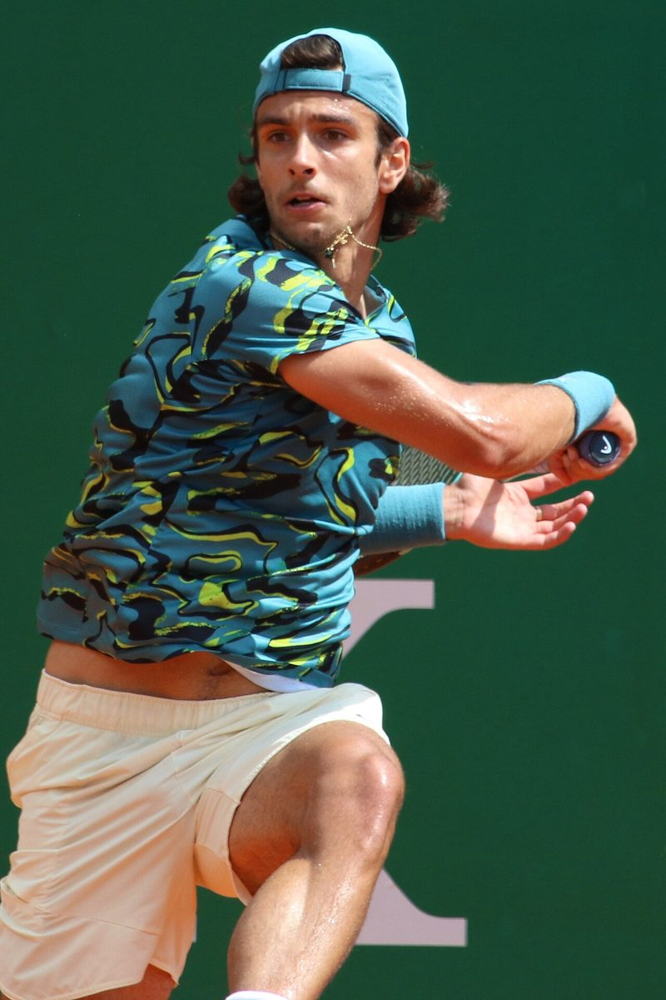
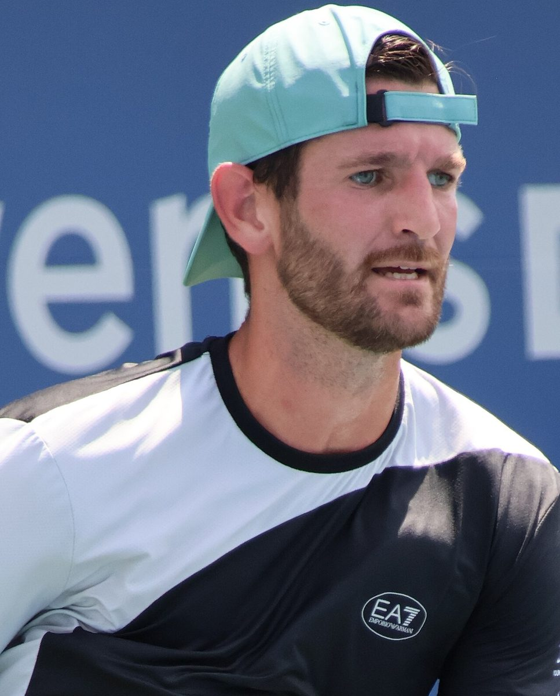

Musetti Stars in Singles and Doubles as Italy Edge Czech Republic to Reach Davis Cup Final
Lorenzo Musetti and Andrea Vavassori survived a deciding tiebreak in Bologna to send the three-time defending champions into their fourth straight final.

Lorenzo Musetti delivered in both singles and doubles on Friday, Nov. 27, 2026, to carry defending champions Italy past the Czech Republic 2-1 at the SuperTennis Arena in Bologna and into their fourth consecutive Davis Cup final.
Musetti anchors decisive doubles thriller
Musetti gave the host nation an opening advantage by defeating Jakub Mensik 6-3, 6-4 in the first singles rubber. Czech number one Jiri Lehecka responded immediately for the visitors, overcoming world No. 7 Flavio Cobolli 6-2, 1-6, 6-3 to square the semifinal tie and force a winner-take-all doubles contest.

Italian captain Filippo Volandri altered his doubles pairing from Wednesday's quarterfinal victory over South Korea, inserting Musetti alongside specialist Andrea Vavassori in place of Matteo Berrettini. Lehecka returned to the indoor hardcourt to partner Tomas Machac for Czechia, breaking Vavassori's serve early to claim the opening set 6-3.
The Italians struck back quickly in the second set, claiming two breaks of serve to wrap up a 6-1 set in under 30 minutes. The deciding set produced no breaks, though the Czech pair reached double break point at 4-3 on Vavassori's serve. Italy held serve, sent the contest into a final-set tiebreak, and clinched a 3-6, 6-1, 7-6 (7-4) victory after nearly two hours on court.
"This has a special meaning in my heart," Musetti said. "My last matches in Davis Cup weren't a win, so I felt like I needed this, to come back and prove that I could help the team. I don't have a voice because I screamed all the match, but I'm really happy and proud of what we did."
Chasing a fourth consecutive crown

The triumph stretched Italy's winning streak to 16 consecutive Davis Cup ties since September 2023. The Italians reached Sunday's championship tie without world No. 2 Jannik Sinner, who was ruled out of the Finals following right knee surgery. Czechia departed after beating Canada 2-0 in Tuesday's quarterfinals, falling just short of reaching their first final since 2013.
Sunday's final in Bologna pits Italy against the winner of Saturday's semifinal between Spain and Great Britain. If Italy lift the trophy on Sunday, Nov. 29, they will become the first nation to win four consecutive Davis Cup titles since the United States won five straight between 1968 and 1972.